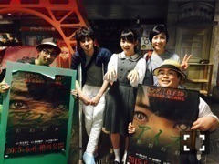

| 2015/06 06 Sat | 目眼瞳芽。646回目 |
昨日はニコ生で
お化け屋敷、台場怪奇学校から
生放送がありました〜
特別に映画「アイズ」仕様の
お化け屋敷を作ってくださいました...
すごく嬉しかったけど、
怖くてほとんど目を瞑ってた泣
流れてくる声や音楽だったり
落書きを探すミッションだったり
全部映画に絡んでて感動しましたが
最後の最後が案内人の方が
迫真過ぎて泣きそうでした、、
でも、最終的には
おばけが推しメンと言ってくれたよ！
ありがとうございます！
映画とコラボしたこのお化け屋敷は、
受付で「アイズを観た」と言うと
体験できるみたいです。
私の声も聞こえるかも...？

福田監督、おひげさん
お化け屋敷体験中、
あまりの怖さに掴んでた
おひげさんの腕を圧迫してしまって
すごい迷惑をかけてしまった。
すみませんでした(T ^ T)
本当に優しくて頼もしかったです！
ありがとうございました(T ^ T)

上川さん、遠藤さん
おぞねさん、西さん
最後に、共演者のみなさんが
駆けつけてくれました！
ありがとうございました（≧∇≦）
そして今日は上映初日。
映画「アイズ」舞台挨拶デーでした。
イオンシネマ板橋
イオンシネマ港北ニュータウン
イオンシネマみなとみらい
を周り、計6回
来てくださったみなさん
本当にありがとうございました。
映画はいかがでしたか？
昨日のニコ生でも
有料上映されましたが、
スクリーンで観ると迫力があって
また違う印象になったのでは？
ぜひ映画館まで足を運んで
ご覧ください。

控え室の扉の全面に名前が！
イオンシネマみなとみらい様から。
メッセージ等ありがとうございました
映画「アイズ」
◎公式サイト
◎予告編
◎主題歌付き予告編
◎舞台挨拶
6月9日 なんばパークスシネマ
6月13日 イオンシネマ板橋/イオンシネマ春日部/イオンシネマ幕張
6月14日 中川コロナシネマワールド
皆さんのおかげで、
上映する劇場が少しずつ
増えています！
明日は久しぶりの横浜で握手会。
感想を聞きたいな。
イオンシネマみなとみらい
近いので観てない方はぜひ！
よろしくお願いします〜
まりか
コメント(508)
2015/06/06 23:48